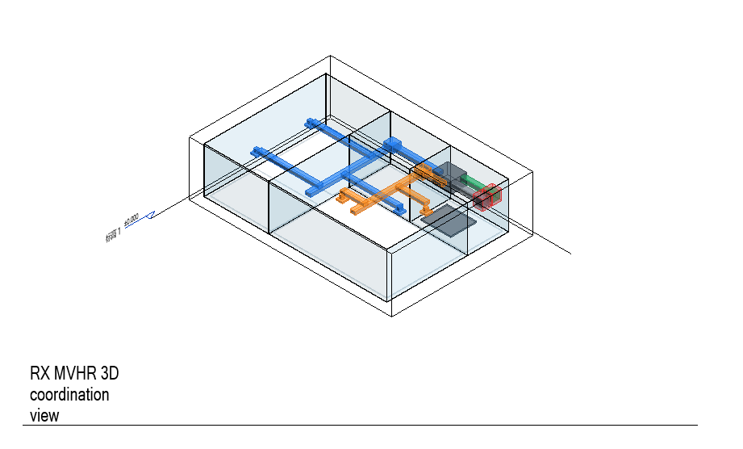
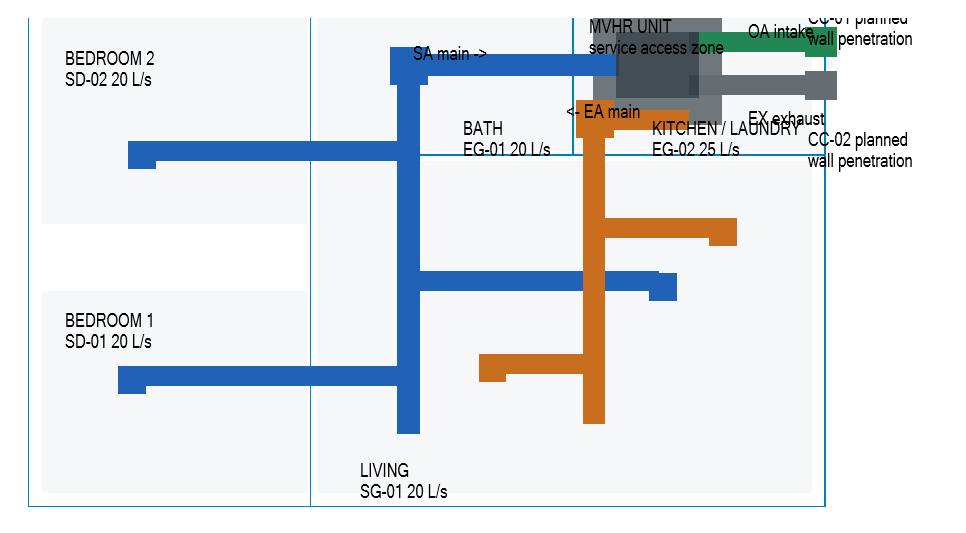
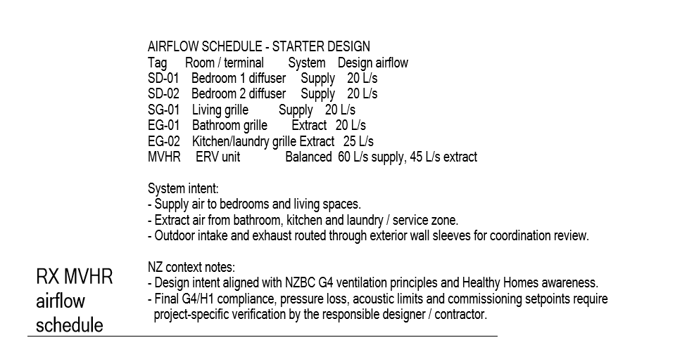
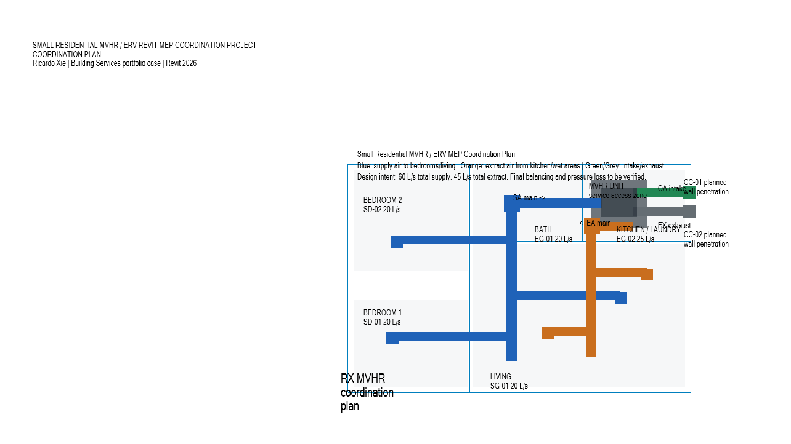
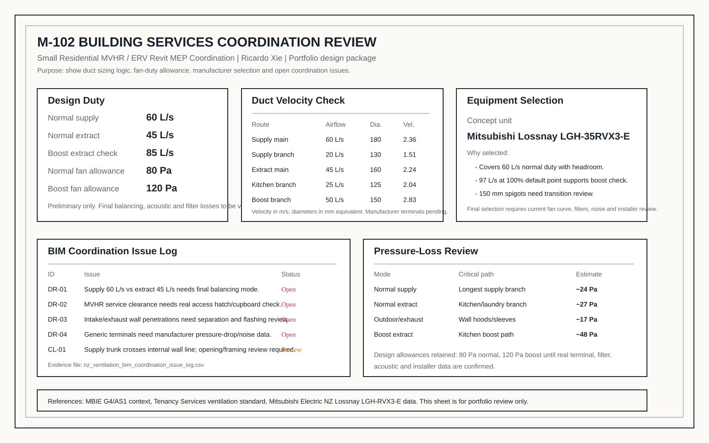
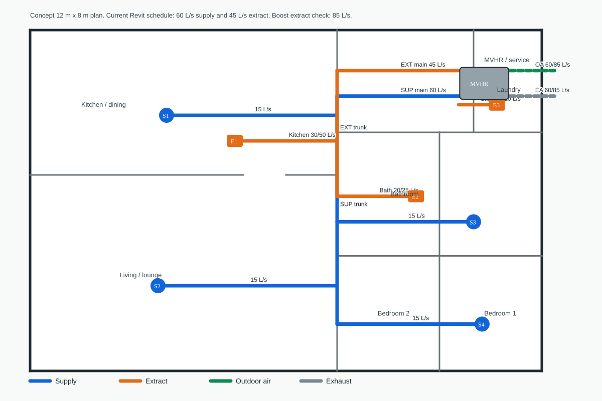
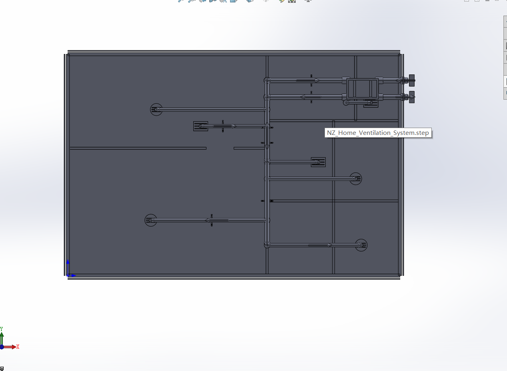
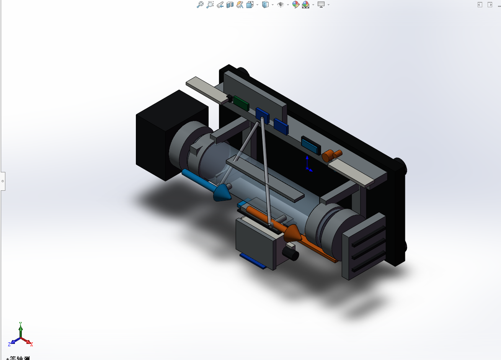
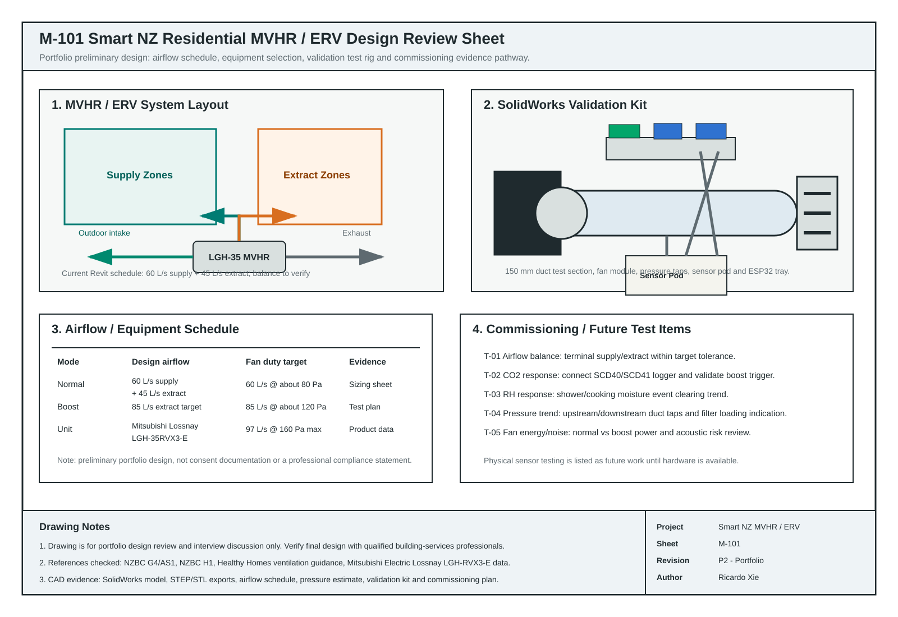
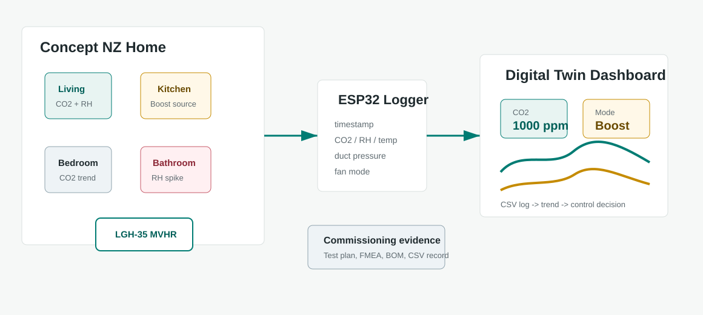

Self-directed building services project
NZ Home Ventilation with Heat Recovery
Whole-house ventilation with heat recovery for a New Zealand home: 60 L/s supply, 45 L/s extract and an 85 L/s boost check, with duct sizing, pressure-loss checks and a Revit 2026 model.
My role: self-directed, end to end. I set the airflow schedule, sized the ducts, estimated pressure losses, selected the heat-recovery (MVHR) unit, automated the Revit model with a C# Revit API script and wrote the commissioning test plan.
Relevant coursework: MECHENG 715 Building Services at the University of Auckland, Semester 2 2026.

Key results
Airflow and duct sizing
- Whole-house check: 216 m³/h through about 230 m³, or 0.94 air changes per hour.
- 2.36 m/s in the 180 mm supply main and 1.51 m/s in the 130 mm supply branches: a low-velocity design for quiet operation.
- 2.24 m/s in the 160 mm extract main; 2.83 m/s in the 150 mm kitchen branch at boost.
Pressure loss and unit selection
- Critical normal path: kitchen/laundry extract at about 27 Pa before allowances (longest supply branch about 24 Pa).
- Critical boost path: kitchen boost extract at about 48 Pa before allowances.
- Fan-duty allowances: about 80 Pa (normal) and 120 Pa (boost) external static pressure, with margin above the path estimates.
- Selected the Mitsubishi Electric Lossnay LGH-35RVX3-E: its 97 L/s at 160 Pa point covers the 85 L/s boost check. The LGH-25 had limited boost headroom; the LGH-50 was likely oversized for this house.
Revit model, generated with C#
I automated the Revit 2026 model with a C# Revit API script. The script generates the house layout, the MVHR unit, the colour-coded supply and extract duct layout, the outdoor intake and exhaust penetrations, the airflow schedule and the drawing sheets. The images below are exported from those sheets.




Coordination review
One review sheet (M-102) brings together the design duty, duct velocities, pressure losses, unit selection and the coordination issue log.

- Open issues logged: final supply/extract balancing mode, MVHR service clearance, intake/exhaust wall penetrations and manufacturer terminal data.
- Simple clash check of the duct routes against the walls, with framing and access-panel checks logged for review.
Concept layout and validation kit
The first concept layout was modelled in SolidWorks and drawn as a 2D DXF plan; it used four 15 L/s supply terminals, and the Revit model refines this to three 20 L/s terminals. I also modelled a validation kit: a 150 mm test duct with a CO₂/humidity sensor pod, upstream and downstream pressure taps, an ESP32 electronics tray, fan module, flow straightener and outlet grille. Both SolidWorks models were generated with C# SolidWorks API scripts and exported to STEP and STL. The kit is modelled, not yet built.




Commissioning dashboard
The commissioning test plan sets seven tests, from airflow balancing to CO₂ and humidity boost response. The dashboard below shows the control logic: it moves between normal, boost and recovery modes as CO₂ and humidity cross their thresholds. It runs on simulated sample events; no physical sensor data yet.

Interactive control prototype
Move the sliders to change the sample event and the boost thresholds.
Sample event
-
-
New Zealand design references
- NZ Building Code G4 Ventilation: outdoor air supply and extract ventilation.
- NZ Building Code H1 Energy Efficiency: ventilation and HVAC energy performance.
- Healthy Homes ventilation standard: kitchen and bathroom extract checks.
Downloads
On small screens, swipe the table to see all columns.
| File | Format | What it is |
|---|---|---|
| Revit plan sheet | PNG image | Sheet RX-MVHR-001, coordination plan with airflow labels |
| Revit 3D view | PNG image | 3D coordination view of the MVHR unit and duct layout |
| Airflow schedule sheet | PNG image | Terminal-by-terminal supply and extract airflow schedule |
| Revit model | RVT, 5.9 MB | Revit 2026 model generated by the C# script; needs Autodesk Revit 2026 |
| Duct sizing and pressure-loss summary | Report (GitHub) | Design duty, duct velocities and critical-path pressure losses |
| Equipment selection note | Report (GitHub) | LGH-25 / LGH-35 / LGH-50 comparison and selection reasoning |
| Commissioning test plan | Report (GitHub) | Seven tests with procedures and acceptance criteria |
| 2D concept plan | DXF, 6 KB | Early four-terminal concept layout for AutoCAD |


Next steps
Build the validation kit, log real CO₂, humidity and airflow data, and replace the generic grilles and diffusers with manufacturer pressure-drop and noise data.